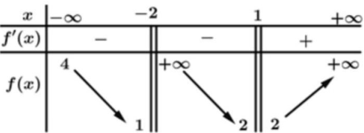
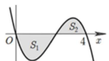
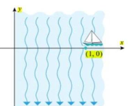

ĐỀ THI TOÁN - ĐỀ SỐ 55 HOT
Phần I: Trắc Nghiệm Nhiều Lựa Chọn
Tóm tắt kiến thức: Nguyên hàm và đạo hàm
Nguyên hàm của hàm số \( f(x) \) là hàm \( F(x) \) sao cho \( F'(x) = f(x) \).
Câu 1:
Hàm số \( F(x) = x^2 + x \) là một nguyên hàm của hàm số nào dưới đây?
Chọn đáp án:
Tóm tắt kiến thức: Mẫu số liệu ghép nhóm
Trong bảng số liệu ghép nhóm, tần số của một nhóm là số phần tử thuộc nhóm đó.
Câu 2:
Khảo sát thời gian xem tivi trong một ngày của một số học sinh khối 11 thu được mẫu số liệu ghép nhóm sau:

| Thời gian (phút) | \([0; 20)\) | \([20; 40)\) | \([40; 60)\) | \([60; 80)\) | \([80; 100)\) |
|---|---|---|---|---|---|
| Số học sinh | 5 | 9 | 12 | 10 | 6 |
Chọn đáp án:
Tóm tắt kiến thức: Phương trình mặt phẳng
Mặt phẳng đi qua ba điểm \( A(x_1; y_1; z_1) \), \( B(x_2; y_2; z_2) \), \( C(x_3; y_3; z_3) \) có phương trình dạng: \( \frac{x - x_1}{x_2 - x_1} + \frac{y - y_1}{y_2 - y_1} + \frac{z - z_1}{z_3 - z_1} = 1 \).
Câu 3:
Trong không gian với hệ tọa độ \( Oxyz \), cho ba điểm \( A(-1; 0; 0) \), \( B(0; 3; 0) \), \( C(0; 0; 4) \). Phương trình nào dưới đây là phương trình của mặt phẳng \( (ABC) \)?
Chọn đáp án:
Tóm tắt kiến thức: Phương trình tham số đường thẳng
Phương trình tham số của đường thẳng đi qua điểm \( A(x_0; y_0; z_0) \) với vector chỉ phương \( \vec{u} = (a; b; c) \): \( \begin{cases} x = x_0 + at \\ y = y_0 + bt \\ z = z_0 + ct \end{cases} \).
Câu 4:
Trong không gian với hệ tọa độ \( Oxyz \), cho ba điểm \( A(-1; 0; 0) \), \( B(0; 3; 0) \), \( C(0; 0; 4) \). Phương trình tham số của đường thẳng \( AB \) là
Chọn đáp án:
Tóm tắt kiến thức: Tiệm cận của đồ thị
Tiệm cận ngang: \( \lim_{x \to \pm \infty} f(x) = k \). Tiệm cận đứng: \( \lim_{x \to a^\pm} f(x) = \pm \infty \).
Câu 5:
Cho hàm số \( y = f(x) \) có bảng biến thiên như sau:

Số đường tiệm cận của đồ thị hàm số đã cho là
Chọn đáp án:
Tóm tắt kiến thức: Cấp số cộng
Trong cấp số cộng, \( u_{n+1} = u_n + d \). Với bốn số \( a, b, c, d \), ta có: \( 2b = a + c \), \( c + d = 2c \).
Câu 6:
Bốn số \( -2, x, 4, y \) theo thứ tự lập thành cấp số cộng, khi đó \( x - y \) bằng
Chọn đáp án:
Tóm tắt kiến thức: Thể tích lăng trụ
Thể tích lăng trụ: \( V = S_{\text{đáy}} \cdot h \), với \( S_{\text{đáy}} \) là diện tích đáy, \( h \) là chiều cao.
Câu 7:
Cho hình lăng trụ có thể tích bằng 18, đáy là hình vuông cạnh bằng 3. Chiều cao của khối lăng trụ đã cho bằng
Chọn đáp án:
Tóm tắt kiến thức: Độ dài vector
Độ dài vector \( \vec{u} = \vec{AB} - \vec{AC} = \vec{CB} \), với \( |\vec{u}| = \sqrt{x^2 + y^2 + z^2} \).
Câu 8:
Cho tứ diện đều \( ABCD \) cạnh \( a \). Độ dài của vector \( \vec{u} = \vec{AB} - \vec{AC} \) là
Chọn đáp án:
Tóm tắt kiến thức: Đạo hàm của hàm logarit
Đạo hàm: \( [\ln u]' = \frac{u'}{u} \).
Câu 9:
Đạo hàm của hàm số \( y = \ln(x + 1) \) trên khoảng \( (-1; +\infty) \) là
Chọn đáp án:
Tóm tắt kiến thức: Điểm cực trị
Điểm cực trị của hàm \( f(x) \) là điểm mà \( f'(x) = 0 \) và \( f''(x) \neq 0 \) hoặc kiểm tra qua bảng biến thiên.
Câu 10:
Hàm số \( f(x) = x^4(x - 1) \) có bao nhiêu điểm cực trị?
Chọn đáp án:
Tóm tắt kiến thức: Tích phân và diện tích
Tích phân \( \int_a^b f(x) \, dx \) biểu thị diện tích có dấu của đồ thị hàm số \( f(x) \) từ \( x = a \) đến \( x = b \).
Câu 11:
Cho hàm số \( y = f(x) \) liên tục trên \( \mathbb{R} \) và có đồ thị như hình vẽ bên:

Biết rằng các diện tích \( S_1, S_2 \) thỏa mãn \( S_1 = 2S_2 = 3 \). Tích phân \( \int_0^4 f(x) \, dx \) bằng
Chọn đáp án:
Tóm tắt kiến thức: Bất phương trình mũ
Giải bất phương trình \( a^{f(x)} > a^k \) (với \( a < 1 \)): \( f(x) < k \).
Câu 12:
Bất phương trình \( \left( \frac{1}{2} \right)^{x^2 + 4x} > \frac{1}{32} \) có tập nghiệm là \( S = (a; b) \). Khi đó giá trị của \( b - a \) là
Chọn đáp án:
Phần II: Trắc Nghiệm Đúng/Sai
Tóm tắt kiến thức: Hình học không gian
Vector pháp tuyến của mặt phẳng được tính bằng tích có hướng của hai vector chỉ phương. Điểm thuộc mặt phẳng nếu thỏa mãn phương trình mặt phẳng.
Câu 13:
Trong không gian với hệ tọa độ \( Oxyz \), cho các điểm \( A(1; -1; 3) \), \( B(0; -4; -1) \), \( C(2; -1; 2) \) và \( D(3; -1; -8) \). Xét tính đúng sai của các mệnh đề sau:
Chọn đáp án cho từng phát biểu:
a)
b)
c)
d)
Tóm tắt kiến thức: Phương trình đường cong
Khoảng cách từ điểm \( M(a; f(a)) \) đến gốc tọa độ: \( OM = \sqrt{a^2 + f(a)^2} \). Khoảng cách nhỏ nhất tìm bằng đạo hàm hoặc bất đẳng thức.
Câu 14:
Giả sử một chiếc thuyền vào sông tại điểm \( (1; 0) \) và giữ hướng về phía gốc tọa độ. Do dòng chảy mạnh, thuyền đi theo đường cong có phương trình \( y = \frac{x^2 - 1}{2x} \), trong đó \( x \) và \( y \) tính bằng kilômét (như hình vẽ bên dưới):

Xét các phát biểu sau:
Chọn đáp án cho từng phát biểu:
a)
b)
c)
d)
Tóm tắt kiến thức: Xác suất có điều kiện
Xác suất có điều kiện: \( P(A|B) = \frac{P(A \cap B)}{P(B)} \). Tổng xác suất: \( P(B) = P(A)P(B|A) + P(\bar{A})P(B|\bar{A}) \).
Câu 15:
Một doanh nghiệp có 45% nhân viên là nữ. Tỉ lệ nhân viên nữ và tỉ lệ nhân viên nam mua bảo hiểm nhân thọ lần lượt là 7% và 5%. Chọn ngẫu nhiên một nhân viên của doanh nghiệp:

Xét các phát biểu sau:
Chọn đáp án cho từng phát biểu:
a)
b)
c)
d)
Tóm tắt kiến thức: Vận tốc và quãng đường
Quãng đường: \( s(t) = \int_0^t v(t) \, dt \). Vận tốc: \( v(t) = s'(t) \).
Câu 16:
Quãng đường vật di được sau 3 giây là \( s(t) = \int_0^3 v(t) \, dt = \int_0^3 (8\cos(\pi t) + 5) \, dt \). Xét các phát biểu sau:
Chọn đáp án cho từng phát biểu:
a)
b)
c)
d)
Phần III: Trắc Nghiệm Trả Lời Ngắn
Tóm tắt kiến thức: Thể tích khối chóp đều
Thể tích khối chóp: \( V = \frac{1}{3} S_{\text{đáy}} \cdot h \). Với chóp đều, chiều cao tính từ tâm đáy.
Câu 17:
Cho khối chóp đều \( S.ABCD \) có \( AC = 4 \), hai mặt phẳng \( (SAB) \) và \( (SCD) \) vuông góc với nhau. Thể tích của khối chóp đã cho bằng bao nhiêu? (làm tròn kết quả đến hàng phần mười).
Nhập đáp án:
Tóm tắt kiến thức: Bài toán tối ưu
Tối ưu hóa số lượng dựa trên điều kiện tài chính và quy đổi.
Câu 18:
Trong quán giải khát có bán các chai nước hoa quả với giá 15.000 đồng một chai, các chai rỗng sẽ đổi lấy 5.000 đồng. Bạn có thể uống được nhiều nhất bao nhiêu chai nếu trong túi bạn có 100.000 đồng?
Nhập đáp án:
Tóm tắt kiến thức: Tối ưu hóa hình học
Tìm cực trị của hàm số diện tích hoặc thể tích bằng đạo hàm hoặc bảng biến thiên.
Câu 19:
Cấu trúc tổ ong là một cấu trúc đặc biệt, mỗi lỗ ong là một lăng kính hình lục giác, một đầu một góc \( \theta \) bằng bao nhiêu? Làm tròn đến hàng phần trăm.
Nhập đáp án:
Tóm tắt kiến thức: Tích phân ứng dụng
Giá trị trung bình: \( f_{\text{tb}} = \frac{1}{b - a} \int_a^b f(x) \, dx \).
Câu 20:
Một mô hình của hệ tim mạch liên hệ thể tích \( V(t) \) của máu trong động mạch chủ tại thời điểm \( t \) trong thời kỳ co tâm thất với áp suất \( P(t) \) được cho bởi: \( V(t) = [0,4 + 0,09P(t)] \left( \frac{3t^2}{T^2} - \frac{2t^3}{T^3} \right) \) (lít), với \( T = 0,27 \, \text{s} \). Giả sử áp suất \( P(t) \) tăng đều từ 15 mmHg tại \( t = 0 \) đến 30 mmHg tại \( t = T \). Tìm thể tích trung bình của máu trong động mạch chủ trong suốt pha tâm thu \( (0 \leq t \leq T) \). Làm tròn đến hàng phần mười.
Nhập đáp án:
Tóm tắt kiến thức: Xác suất Bayes
Xác suất Bayes: \( P(A|B) = \frac{P(B|A)P(A)}{P(B)} \). Với hai lần xét nghiệm độc lập, xác suất tổng hợp tính bằng công thức Bayes lặp.
Câu 21:
Trong một báo cáo, xét nghiệm Mammography người mắc bệnh ung thư vú cho kết quả dương tính 97%. Nghiên cứu dịch tễ học chỉ ra tỉ lệ mắc ung thư vú của phụ nữ trong độ tuổi 55 là 1%. Một phụ nữ 55 tuổi, không có tiền sử ung thư vú thực hiện xét nghiệm Mammography hai lần độc lập đều nhận được kết quả dương tính. Xác suất người phụ nữ đó mắc bệnh ung thư vú là bao nhiêu %? Viết kết quả làm tròn đến hàng đơn vị.
Nhập đáp án:
Tóm tắt kiến thức: Giao tuyến mặt cầu và mặt phẳng
Bán kính đường tròn giao tuyến: \( r = \sqrt{R^2 - d^2} \), với \( d \) là khoảng cách từ tâm mặt cầu đến mặt phẳng. Độ dài đường tròn: \( 2\pi r \).
Câu 22:
Trong không gian \( Oxyz \), cho đường thẳng \( d \) và mặt phẳng \( (P) \). Điểm \( N \) thuộc mặt cầu \( (S) \) có đường kính \( AB = 6 \), tâm \( I(0; 0; 1) \), và \( N \in (P) \). Tính độ dài đường cong giao tuyến của \( (S) \) và \( (P) \), làm tròn đến hàng phần mười.
Nhập đáp án: